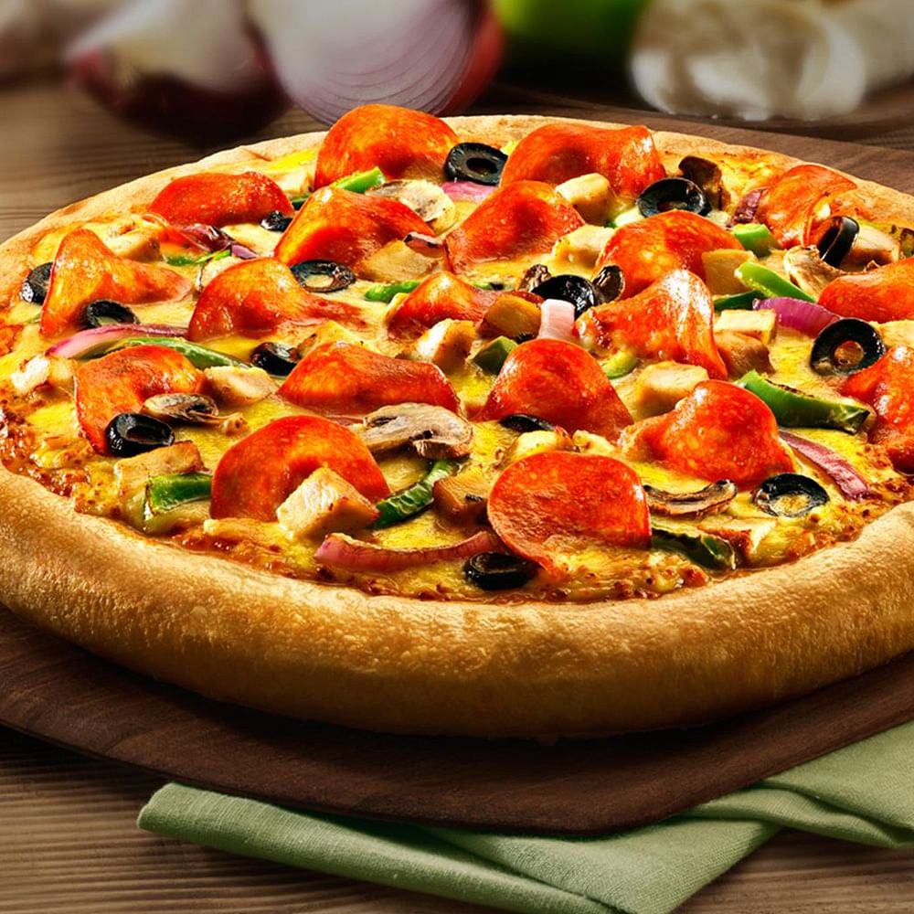

Pizza

Pizza is a beloved Italian dish that features a round, flat dough base topped with tomato sauce, cheese, and a variety of toppings, then baked to create a crispy, flavorful crust. Common toppings include pepperoni, mushrooms, onions, olives, and bell peppers, though endless combinations allow for personal creativity and regional styles. From the thin, crispy crust of a New York-style slice to the deep-dish richness of Chicago-style pizza, it comes in many forms. Pizza is enjoyed worldwide for its delicious taste, shareable nature, and ability to suit nearly any preference, making it a go-to food for casual meals, celebrations, and gatherings.
Ingredients
- Pizza dough (store-bought or homemade)
- Tomato sauce (pizza sauce or marinara)
- Shredded mozzarella cheese
- Olive oil
- Salt and pepper
- Fresh basil leaves (optional)
- Your choice of toppings (pepperoni, mushrooms, bell peppers, onions, etc.)
Steps
- Preheat your oven to 475°F (245°C) and place a pizza stone or baking sheet inside to heat up.
- Roll out the pizza dough on a floured surface to your desired thickness, typically about 12 inches in diameter.
- Transfer the rolled-out dough onto a piece of parchment paper or a floured pizza peel for easy transfer to the oven.
- Spread a thin layer of tomato sauce over the dough, leaving a small border around the edges.
- Sprinkle shredded mozzarella cheese evenly over the sauce.
- Add your choice of toppings, distributing them evenly across the pizza.
- Drizzle a little olive oil over the top and season with salt and pepper.
- Carefully slide the pizza onto the preheated pizza stone or baking sheet in the oven.
- Bake for about 10-15 minutes, or until the crust is golden brown and the cheese is bubbly and slightly browned.
- Remove from the oven, let it cool for a minute, then garnish with fresh basil leaves if desired. Slice and serve hot!